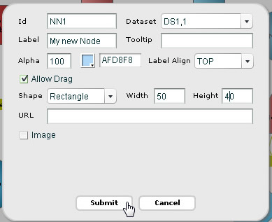
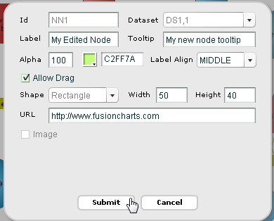
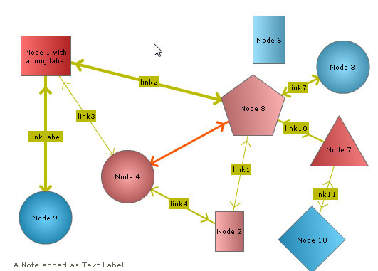

You can interactively add a node in an existing chart. To avail this feature you need to render the chart in edit mode » Edit mode can be enabled setting viewMode='0' in <chart> element. You can also edit an existing node or delete a node if required. In this page we will see how these can be achieved.
For this, let's take the basic chart, as shown below, which we have created in the previous page. Upon this, we will add a node with text "My new Node" to this chart.

Adding a node at run-time
When in edit mode, the end user can add a node by right-clicking on a position over the chart where the node is to be placed and then selecting "Add a node" option from the context menu.
This presents a dialog box, as shown above, to enter the following node information:
- "Id" represents the unique identifier for the node
- "Dataset" represents the series name of the data-set to which this new node will belong to. The node will inherit the visual properties defined for the data-set.
- "Label" represents the label for the new node
- "Tooltip" represents the tool-tip for the node
- A color picker helps you choose the color for the node
- "Alpha" sets the transparency of the node (where 100 is fully opaque and 0 is fully transparent)
- "Label Align" sets the vertical alignment (top/middle/bottom) of the label with relation to the node.
- "Allow Drag" check-box sets the node's to be drag-able by user
- Shape lets you choose the shape for new node. You can choose rectangle, circle or polygon
- You can set width, height or radius depending on the shape chosen
- You can also add an image to the node by selecting the "Image" check box
- When "Image" is selected you get another set of customizable options like "Image URL" (which takes the path of the image), width, height and vertical alignment of the image
- You can add a hyper-link to the node through "URL". This allows you to set a URL or JavaScript function
The various configurable options are shown in the images below:
 |
|  |
When the users now click Submit, they will see the new node as shown below:
You can define nodes in chart data too. Each node is defined in the data of the chart through the <set> element of the <dataset> element.
In edit mode, the end user can edit an existing node which is either created using the data provided to the chart while rendering/updating or created at run-time.
To edit a node, right-click on the node and select "Edit Node" option from the context menu.
This again presents a dialog box with all major configurable options for the node. We did some more changes and clicked Submit.

The node will get updated with new configurations after Submit is clicked.
Using the Edit dialog box you cannot edit the dataset name, change the id, change the shape type and image options remain disabled (whether applied or not). You can configure rest of the settings.
In edit mode, the end user can delete a node by right-clicking on a node and then selecting "Delete Node".
The node and its attached connectors would then be deleted, as shown below:
